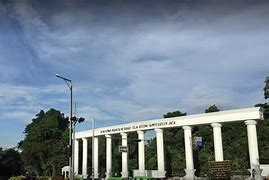
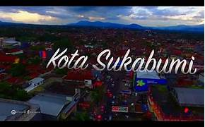
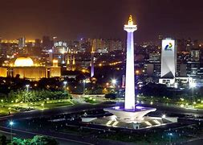
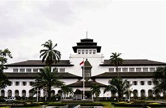

Profile Pembuat
- Nama: Muhamad Rizki Badru Tamam
- Email: mrizkibadru@gmail.com
- github: click here
Deskripsi My Gallery Wishlist
Ini adalah halaman web gallery yang menampilkan daftar kota idaman saya yang ada di Indonesia. Kota atau daerah ini memiliki keindahan alam, budaya, sejarah dan kenangan unik yang tidak semua kota memilikinya.
Foto Kota Favorit
|  |  |  |  |

|

|
Informasi Kota Favorit
| Nama Kota | Icon Kota | Jumlah Penduduk | Keunikan |
|---|---|---|---|
| Bogor | Tugu kujang | 1.114.018 Jiwa | kota Tempat Lahir |
| sukabumi | Mutiara dari Priangan Barat", | 348.945 Jiwa | mochi |
| bandung | gedung sate | 2.444.160 jiwa | Banyak Tempat Wisata |
| monas | monumen | 11.100.929 Jiwa | Banyak Museum dan Galeri Seni |
| Bekasi | Patung Lele | 2,5 Juta | Kota Pacar Saya |
| Sumedang | Monumen Lingga | 1,1 Juta | Kampung Halaman |